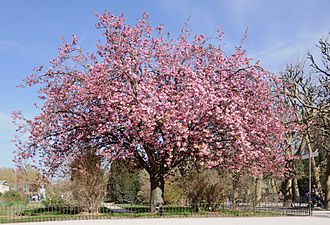

Nature is the ultimate source of our living. Both living and non-living things include nature, and everyone is interdependent, which helps maintain the ecosystem. Plants, animals, and humans all depend on nature for their survival. It supplies oxygen, sunlight, soil, water, and other necessary components. The ancient Phoenicians used almond blossoms with honey and urine as a tonic, and sprinkled them into stews and gruels to give muscular strength. Crushed petals were also used as a poultice on skin spots and mixed with banana oil, for dry skin and sunburn.[3] In herbalism the crab apple was used as treatment for boils, abscesses, splinters, wounds, coughs, colds and a host of other ailments ranging from acne to kidney ailments. Many dishes made with apples and apple blossom are of medieval origin. In the spring, monks and physicians would gather the blossoms and preserve them in vinegar for drawing poultices and for bee stings and other insect bites
Plum blossom Descending from China and south east Asia, the earliest orange species moved westwards via the trade routes.[5] In 17th century Italy peach blossoms were made into a poultice for bruises, rashes, eczema, grazes and stings.[6] In ancient Greek medicine plum blossoms were used to treat bleeding gums, mouth ulcers and tighten loose teeth. Plum blossoms mixed with sage leaves and flowers were used in plum wine or plum brandy as a mouthwash to soothe sore throats and mouth ailments and sweeten bad breath